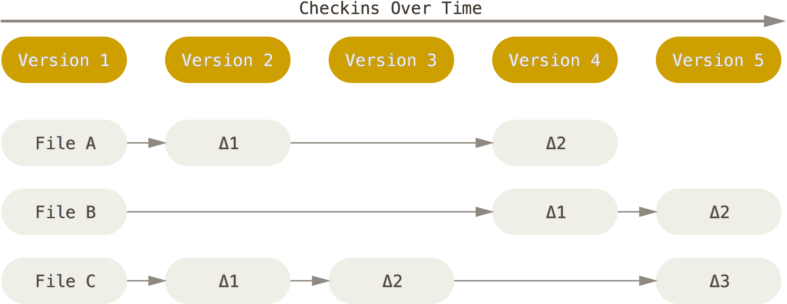
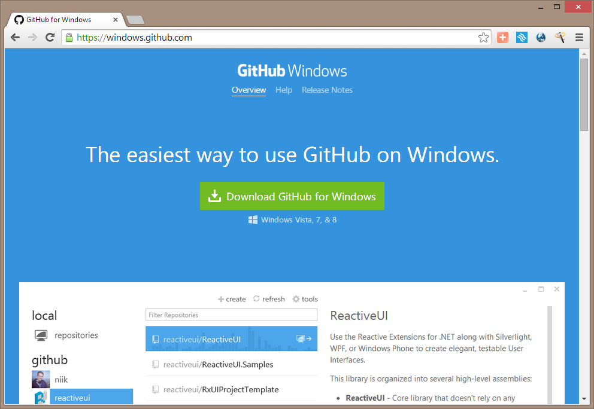
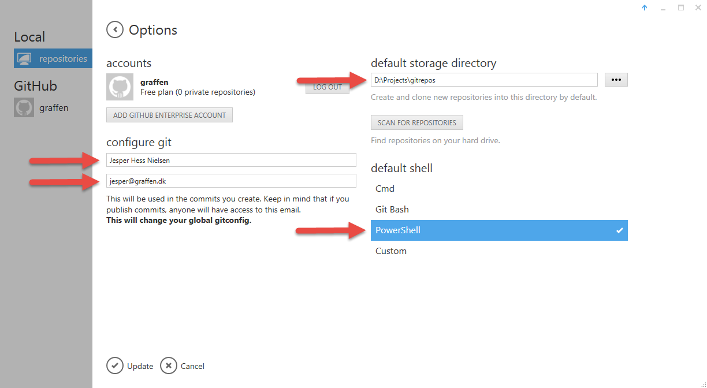

- An Introduction
Agenda
- What is git?
- Getting started
- Git basics
- Git branching
- Git workflows
- Git & TFS
- Open Discussion
What is git?
Git is a free and open source distributed version control system designed to handle everything from small to very large projects with speed and efficiency.
Why git?
- a bit of history
Part 1
Getting Started
About Version Control
Local Version Control Systems

Or just use folders...

Centralized Version Control Systems

Distributed Version Control Systems

Git Basics
Start by clearing your mind!
Snapshots. Not Differences.
Other systems store data as deltas to a base version of each file.

Git stores data as snapshots of the project over time

Nearly every operation is local
Git has integrity
- Everything is checksummed before storage
-
Git uses SHA-1 hashes to perform the checksum
24b9da6552252987aa493b52f8696cd6d3b00373 -
SHA-1's are used to reference every object in git
> git log commit 82bc0d42140bd857bcee94380d35ba680ac357f3 Author: Jesper Hess Nielsen <jesper@graffen.dk> Date: Tue Apr 1 08:49:33 2014 +0200 Added two missing SIM WebConnect servers
Git generally only adds data
Git is extremely effective on storage
The three states
- modified
- staged
- committed
The three main parts of a git repo
- The git directory
- The working directory
- The staging area or index
The basic git workflow

Getting Started
Installing Git
The easiest way to get git on Windows

Or just grab the official installer

Initial configuration

Use the console, Luke!
Your identity
> git config --global user.name "Jesper Hess Nielsen"
> git config --global user.email "jesper@graffen.dk"
Checking your settings
> git config --list
user.name=Jesper Hess Nielsen
user.email=jesper@graffen.dk
color.status=auto
color.branch=auto
color.interactive=auto
...What's my user.name?
> git config user.name
Jesper Hess Nielsen
You can always get help
> git help <verb>
> git <verb> --help
> git help configPart 2
Git Basics
Initializing a git repository
> git init
Initialized empty Git repository in D:/GitDemos/MyProject/.git/
That's all there is to it.
Cloning a Repository
> git clone https://github.com/madskristensen/MiniBlog
> git clone https://github.com/madskristensen/MiniBlog MyBlog
Nope, not like the sheep.
This is how it looks
> git clone https://github.com/madskristensen/MiniBlog
Cloning into 'MiniBlog'...
remote: Reusing existing pack: 2428, done.
remote: Total 2428 (delta 0), reused 0 (delta 0)
Receiving objects: 100% (2428/2428), 8.03 MiB | 14.49 MiB/s, done.
Resolving deltas: 100% (1270/1270), done.
Checking connectivity... done
Protocol support
- Local filesystem
- SMB (\\servername\share\repository)
- HTTP(s)
- SSH
- git://
Working with the repo
Files can exist in one of several states

Checking the status of your files
> git status
# On branch master
nothing to commit, working directory cleanTracking new files
> git status
# On branch master
# Untracked files:
# (use "git add <file>..." to include in what will be committed)
#
# howto.txt
nothing added to commit but untracked files present (use "git add" to track)
> git add howto.txt
> git status
# On branch master
# Changes to be committed:
# (use "git reset HEAD <file>..." to unstage)
#
# new file: howto.txt
Staging modified files
> git status
# On branch master
# Changes to be committed:
# (use "git reset HEAD <file>..." to unstage)
#
# new file: howto.txt
#
# Changes not staged for commit:
# (use "git add <file>..." to update what will be committed)
# (use "git checkout -- <file>..." to discard changes in working directory)
#
# modified: README.md
#
> git add README.md
> git status
# On branch master
# Changes to be committed:
# (use "git reset HEAD <file>..." to unstage)
#
# modified: README.md
# new file: howto.txt
#
More staging
> notepad howto.txt
> git status
# On branch master
# Changes to be committed:
# (use "git reset HEAD >file>..." to unstage)
#
# modified: README.md
# new file: howto.txt
#
# Changes not staged for commit:
# (use "git add >file>..." to update what will be committed)
# (use "git checkout -- >file>..." to discard changes in working directory)
#
# modified: howto.txt
#
What? Now howto.txt is both staged and unstaged?
Our snapshot is ready
> git add howto.txt
> git status
# On branch master
# Changes to be committed:
# (use "git reset HEAD <file>..." to unstage)
#
# modified: README.md
# new file: howto.txt
#
So let's commit our changes.
> git commit -m"Reworded the headline in README.md and added howto.txt"
[master 39f41db] Reworded the headline in README.md and added howto.txt
2 files changed, 2 insertions(+), 1 deletion(-)
create mode 100644 howto.txt
Reviewing our history
> git log
commit 39f41db15e8a567a545653423dd97c857addcfca
Author: Jesper Hess Nielsen <jesper@graffen.dk>
Date: Fri May 2 14:06:32 2014 +0200
Reworded the headline in README.md and added howto.txt
commit 824d7876f0c5b792220d1ae33b0dff2486b79283
Author: Mads Kristensen <post@madskristensen.net>
Date: Fri Apr 25 08:29:42 2014 -0700
Redirect to login page from email links
...
...
Part 3
Git Branching
What is a branch?
Nothing more than a 40-character text file inside your repository.
How does branching in git work?
- by moving that pointer around.
What is a commit really?

Add more commits

The master branch

Create a new branch
> git branch testing

The HEAD pointer

Switching branches
> git checkout testing

Let's add a commit
> notepad test.rb
> git commit -a -m "made a change"

Switch back to master
> git checkout master

A few more changes
> notepad test.rb
> git commit -am "Made another change"

All this happens on your local machine!
Branches only appear on the server if you explicitly push them there.
Advanced topics for another time
- Merging and branching strategies
- Rebasing & rewriting history
- git bisect
- Interactive commits & cherry picking
- The reflog
Part 4
Git workflows
Centralized Workflow

Integration-Manager Workflow

Dictator and Lieutenants Workflow

Part 5
Git in VS & TFS
Tooling Support
- VS has supported git natively since VS 2012 update 2
- TFS supports git repos on the server since TFS 2013
- TFS 2013 update 4 includes rudimentary pull-request support
TFVC vs Git VC
Team Foundation Server Version Control
(TFSVC)
Git Version Control
(Git VC)
Git commands explained
| Git VC | Team Foundation VC |
|---|---|
| Commit | n/a |
| Push | Check-in |
| Fetch | Get-Latest |
| Pull | Get-Latest + Merge |